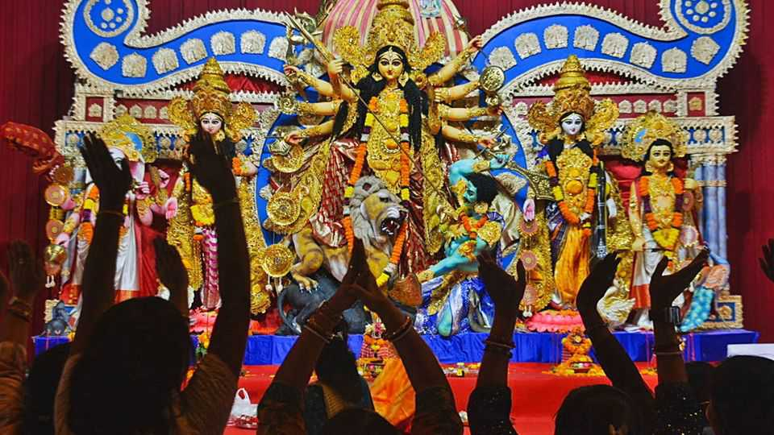
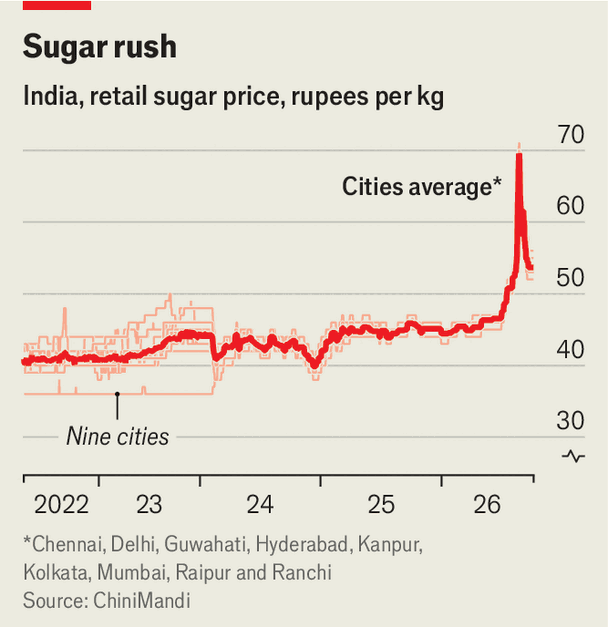

Indian celebrations will be more expensive this year
Blame soaring sugar prices

Oct 8th 2026
Mumbai’s festive season kicks off with Ganesh Chaturthi, which this year fell in September. Hindus bring idols of the elephant-headed god into their homes. He stays for up to ten days before the often-colossal statues are immersed in the Arabian Sea. Mumbaikars also feast on his favourite food: dumplings stuffed with grated coconut and jaggery (set sugar-cane juice). Then come nine nights of dancing and fasting for Navratri, celebrating nine avatars of the goddess Durga. On the eighth day young girls representing aspects of Durga are given suji ke halwe, a mix of semolina, ghee and sugar.
Next is Dussehra, marking Lord Ram’s victory over the demon king Ravana—feted across northern India with tens of millions of jalebiya, deep-fried batter coils soaked in syrup. The sugar rush peaks with Diwali, the festival of lights, as families and offices exchange elaborate gift boxes of mithaiyan, traditional sweets.

This year such treats may taste bittersweet. India’s sugar prices have spiked. A kilo of sugar now costs 53 rupees (55 cents) in Mumbai, a 15% increase from 46 rupees in June. Anyone trying to beat the festive rush was stung even more: in late August prices reached 70 rupees in several cities (see chart), a rise of more than 50% in two months. Inflation more broadly, at 4.8%, is above the Reserve Bank of India’s target of 4%, prompting the first interest-rate rise in four years on October 7th.
Some suggest nature is ultimately to blame for the sugar-price spike. Unseasonal rains last October left cane fields in Maharashtra, a big sugar-producing state, waterlogged. Across the “sugar-cane belt” of northern India, farms have been struck by red rot, a fungal disease. Production forecasts for the year have been cut by more than a tenth. Others point at the government, which allowed 800,000 tonnes to be exported even after it was clear that output would fall short. It has since banned all exports. An unpopular policy of blending ethanol with petrol is an easy target. But it cannot explain the spike: only 9% of this season’s crop is being turned into ethanol, compared with 12% in 2022-23.
Lower production led to speculation. “It was expectations-led,” says Sanjay Kumar of Delhi University. Mills reckoned that their inventories of sugar would be worth more in the future and so kept a tight hold of their stocks. The government intervened, obliging mills to sell their quotas, through which it regulates supply, every 15 days rather than monthly. It also allowed some tariff-free imports. Normally sugar imports are subject to a tariff of 100%, enough to deter foreign producers. Although little foreign sugar has arrived, this was enough to cool the market “psychologically”, says Mr Kumar.
India’s government has in the past been more worried about the risk of glut than of shortage. A fixed “fair and remunerative” price is a political sweetener for farmers: 365 rupees per 100kg for the season starting this month, a third more than in 2018. Guaranteed returns encouraged planting and left mills with huge stockpiles. The government permitted exports and then subsidised them. By 2021 India was the world’s second-largest seller of sugar, after Brazil. When the World Trade Organisation ruled against its export subsidies, the government leaned harder on ethanol blending to absorb some of the excess. Intervention begat further intervention.
A warmer world risks upsetting this constructed market. El Niño, a recurring pattern of atmospheric warming, could contribute to a weak monsoon next year as well as poor output in Brazil and Thailand. The price of sugar futures, traded in America, has risen by 24% this year. Even allowing more imports would not shield Indian consumers from these higher global prices. A government that built a system to protect sugar-cane growers now wants to shield sweet-toothed Indians from higher prices. It is a sticky situation. ■